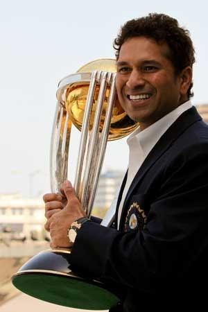

Tamim Iqbal Khan, more popularly known as Tamim Iqbal, is a Bangladeshi cricketer. He is the nephew of former Bangladesh skipper Akram Khan who is the current chief selector of Bangladesh Cricket Board.
Tamim Iqbal - WikipediaMashrafe Bin Mortaza, Popularly known as the 'Narail Express', is a Bangladeshi international cricketer and politician who is the former captain in all three formats of the game for the Bangladesh national cricket team and currently serves a M.P. of Narail District in Bangladesh.
Mashrafe Mortaza - WikipediaMushfiqur Rahim is a Bangladeshi cricketer and the former captain and vice-captain of the Bangladesh national cricket team. He is a left-handed middle-order batsman and was also a wicket-keeper in the Bangladesh Cricket Team. He is widely considered as the most successful captain of Bangladesh in Test cricket.
Mushfiqur Rahim - Wikipedia
Mohammad Mahmudullah, also known as Riyad, is a Bangladeshi cricketer and former captain of the Bangladesh national cricket team in T20I. He has played First-class and List A cricket for Dhaka Division and has represented Bangladesh in all forms of the game.
Mahmudullah - Wikipedia
Litton Kumer Das is a Bangladeshi cricketer. and the vice-captain of Bangladesh National Test Cricket Team. He is a right-handed opening batsman and a test wicket-keeper. He made his international debut for Bangladesh in June 2015. He has scored the highest individual score for Bangladesh in ODI cricket.
Litton - WikipediaAfif Hossain Dhrubo is a Bangladeshi cricketer. In February 2018, he was named in Bangladesh's Twenty20 International squad for their series against Sri Lanka. He made his T20I debut for Bangladesh against Sri Lanka on 15 February 2018.
Afif Hossain - Wikipedia